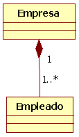
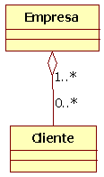

Tema 6: POO Avanzada. Herencia, polimorfismo e interfaces¶
Duración y criterios de evaluación
Duración estimada: 14 sesiones
Resultados de aprendizaje
- Distinguir los tipos de relaciones que pueden existir entre clases.
- Aplicar la herencia para crear jerarquías de clases reutilizando código.
- Utilizar clases abstractas e interfaces para diseñar la estructura del programa.
- Comprender y aplicar el polimorfismo y la ligadura dinámica.
- Conocer las novedades modernas de Java (records, sealed classes, pattern matching) y saber cuándo usarlas.
Criterios de evaluación
- Se identifica la relación adecuada entre clases mediante "tiene un" (composición/agregación) o "es un" (herencia).
- Se crean jerarquías de clases con
extends,supery se sobrescriben métodos con@Override. - Se diseñan clases abstractas e interfaces, y se distinguen sus diferencias y cuándo utilizar cada una.
- Se construyen estructuras de datos polimórficas y se usan la ligadura dinámica,
instanceofy el casting correctamente. - Se emplean mecanismos defensivos (copias de objetos) al exponer o recibir referencias.
- Se utilizan las características modernas de Java cuando aportan claridad al código.
6.1 Introducción¶
En el tema anterior aprendiste los fundamentos de la Programación Orientada a Objetos: clases, objetos, atributos, métodos y los cuatro pilares del paradigma (abstracción, encapsulación, herencia y polimorfismo).
En este tema vamos a profundizar en esos conceptos para poder construir programas de verdad:
- Cómo se relacionan las clases entre sí (composición, herencia...).
- Cómo se diseña una jerarquía de clases con herencia.
- Para qué sirven las clases abstractas y las interfaces.
- Qué es el polimorfismo y por qué es tan potente en Java.
- Qué ha incorporado Java en sus versiones modernas (records, sealed classes, pattern matching).
Al terminar este tema serás capaz de diseñar la estructura de una aplicación pequeña como App Banco (con cliente, cuenta, movimientos...) de forma coherente y mantenible.
Recuerda el vocabulario
- Clase: molde o plantilla que define atributos y métodos.
- Objeto: instancia de una clase (tiene estado y comportamiento).
- Encapsulación: ocultar el estado y exponerlo a través de métodos.
6.2 Relaciones entre clases¶
En un programa real, las clases raramente viven aisladas: se comunican, se usan unas a otras o se organizan en jerarquías. Estos son los tipos de relación más habituales:
6.2.1 Relaciones de uso¶
| Relación | Qué significa | Ejemplo |
|---|---|---|
| Clientela | Una clase utiliza objetos de otra clase (los crea o recibe como parámetro). | El main usa Scanner, LocalDate... |
| Composición | Un atributo de una clase es un objeto de otra clase. | Cuenta tiene un atributo titular de tipo Cliente. |
| Anidamiento | Se declaran clases internas dentro de otras clases (menos habitual). | Clase Movimiento dentro de Cuenta. |
| Herencia | Una clase base comparte características con otras que añaden funcionalidad. | CuentaAhorro y CuentaCorriente heredan de Cuenta. |
6.2.2 Especialización y generalización¶
Dentro del diseño de clases se habla de dos perspectivas sobre la misma relación de herencia:
- Especialización: partimos de algo general y añadimos características. Ejemplo: a partir de
VehiculocreamosCamion(especializamos). - Generalización: partimos de algo concreto y extraemos lo común. Ejemplo: a partir de
Camion,CocheyMotosacamos la clase comúnVehiculo(generalizamos).
Son dos formas de mirar la misma jerarquía: de arriba abajo (generalización) o de abajo arriba (especialización).
6.2.3 Reglas mnemotécnicas: "tiene un" y "es un"¶
Para decidir la relación, pregunta en voz alta:
- Si un objeto es un objeto de otra clase → Herencia. (Un
Alumnoes unaPersona). - Si un objeto tiene un objeto de otra clase → Composición. (Un
Cochetiene unMotor).
Ejemplo ¿es un o tiene un?
- ¿Un coche es un vehículo? Sí → herencia (
Coche extends Vehiculo). - ¿Un coche tiene ruedas? Sí → composición (atributo
Rueda[]). - ¿Un empleado es una persona? Sí → herencia.
- ¿Una cuenta tiene un titular? Sí → composición.
6.3 Composición y Agregación¶
6.3.1 Composición¶
Ya la has usado casi sin darte cuenta: es simplemente declarar como atributo de una clase un objeto de otra clase.
public class Cuenta {
private long numero;
private Cliente titular; // Composición: un atributo es un objeto de la clase Cliente
private double saldo;
private float interes;
}

Ojo con los getters que devuelven objetos
Cuando el tipo devuelto es un primitivo (int, double...), el getter devuelve una copia del valor, así que desde fuera no se puede modificar el original:
public int getNumero() {
return numero; // Se devuelve el valor. Quien lo recibe no puede tocar la Cuenta.
}
Pero cuando el tipo es un objeto, el getter devuelve una referencia (puntero) al objeto. Quien lo reciba sí podría modificar el objeto original:
public Cliente getTitular() {
return titular; // Devuelve la referencia: podrían cambiar los datos del titular desde fuera
}
Aunque los atributos sean private, devolver la referencia del objeto rompe la encapsulación. ¿Cómo lo evitamos?
6.3.2 Técnica defensiva: devolver una copia¶
En lugar de devolver la referencia, se devuelve un objeto nuevo con los mismos valores:
public Cliente getTitular() {
// Se crea una copia y se devuelve. El original no se puede tocar desde fuera.
Cliente aux = new Cliente(this.titular.getNombre(), this.titular.getApellidos());
return aux;
}
Àmbito educativo
En los ejercicios básicos no siempre aplicaremos copias defensivas, pero debes saber que existen y por qué. Son muy habituales en aplicaciones profesionales.
6.3.3 Ojo en los constructores¶
Si en el constructor guardamos directamente la referencia que nos pasan, y fuera se modifica el objeto, también cambiará el de la cuenta:
// Constructor "peligroso"
public Cuenta(long numero, Cliente titular, float interes) {
this.numero = numero;
this.titular = titular; // OJO: guarda la MISMA referencia que llega de fuera
this.saldo = 0;
this.interes = interes;
}
// Constructor copia
public Cuenta(Cuenta c) {
this.numero = c.getNumero();
this.titular = c.getTitular(); // OJO: comparte el titular con la cuenta original
this.saldo = c.getSaldo();
}
La solución defensiva (composición fuerte) es guardar una copia:
public Cuenta(long numero, Cliente titular, float interes) {
this.numero = numero;
this.titular = new Cliente(titular); // Copia defensiva: constructor copia de Cliente
this.saldo = 0;
this.interes = interes;
}
6.3.4 Agregación: composición "débil"¶
La agregación es un tipo de composición débil: una clase es parte de otra, pero:
- Las partes no se destruyen al destruir la clase principal.
- Las partes pueden ser compartidas por varios objetos complejos.
Ejemplo: un coche "tiene" unas ruedas, pero las ruedas existen independientemente y podrían montarse en otro coche. El mismo objeto Ruedas puede estar compartido.
public class Coche {
private String marca;
private String modelo;
private int caballos;
private Ruedas ruedas;
// Agregación: guardamos la referencia que nos pasan (las ruedas se comparten)
public Coche(String marca, String modelo, int caballos, Ruedas ruedas) {
this.marca = marca;
this.modelo = modelo;
this.caballos = caballos;
this.ruedas = ruedas;
}
}
Si queremos composición fuerte (la clase es dueña absoluta de la parte), creamos una copia:
public Coche(String marca, String modelo, int caballos, Ruedas ruedas) {
this.marca = marca;
this.modelo = modelo;
this.caballos = caballos;
this.ruedas = new Ruedas(ruedas); // Composición fuerte: copia independiente
}

Diferencia visual en UML
- Agregación → rombo vacío (▷): la parte se comparte y vive independiente.
- Composición → rombo relleno (◆): la parte no existe sin el todo.
Ejercicio rápido: catálogo de coches (solución)
Prueba y corrige este código creando las clases necesarias:
public static void main(String[] args) {
System.out.println("Bienvenido al catálogo de coches");
Ruedas michelin = new Ruedas("Michelin", "Primacy", 225, 'V');
Ruedas dunlop = new Ruedas("Dunlop", "Sport", 225, 'V');
Coche bmw = new Coche("BMW", "320d", 177, michelin);
System.out.println(michelin);
System.out.println(dunlop);
System.out.println(bmw);
}
Solución
Crea la clase Ruedas con marca, modelo, ancho y código de velocidad (y su constructor). Luego crea Coche con su constructor. La clave del ejercicio es decidir si el atributo ruedas de Coche debe guardar la referencia (agregación) o una copia (composición fuerte).
public class Ruedas {
private String marca;
private String modelo;
private int ancho;
private char indiceVelocidad;
public Ruedas(String marca, String modelo, int ancho, char indiceVelocidad) {
this.marca = marca;
this.modelo = modelo;
this.ancho = ancho;
this.indiceVelocidad = indiceVelocidad;
}
// Constructor copia (para composición fuerte)
public Ruedas(Ruedas r) {
this(r.marca, r.modelo, r.ancho, r.indiceVelocidad);
}
@Override
public String toString() {
return "Ruedas: " + marca + " " + modelo + " " + ancho + "/" + indiceVelocidad;
}
}
public class Coche {
private String marca;
private String modelo;
private int caballos;
private Ruedas ruedas;
public Coche(String marca, String modelo, int caballos, Ruedas ruedas) {
this.marca = marca;
this.modelo = modelo;
this.caballos = caballos;
// this.ruedas = ruedas; // Agregación (composición débil)
this.ruedas = new Ruedas(ruedas); // Composición fuerte
}
@Override
public String toString() {
return "Coche: " + marca + " " + modelo + " (" + caballos + " cv), " + ruedas;
}
}
6.4 Herencia¶
La herencia es el mecanismo para crear clases a partir de otras existentes. En Java se usa la palabra clave extends:
public class Alumno extends Persona {
// Alumno hereda atributos y métodos de Persona
}
6.4.1 La jerarquía de clases en Java¶
Todas las clases de Java (incluida la Persona que tú definas) descienden, en última instancia, de la clase Object, definida en java.lang. De ella heredan métodos muy útiles como toString(), equals(), hashCode(), getClass()...
classDiagram
Object <|-- Persona
Persona <|-- Alumno
Persona <|-- Profesor6.4.2 Qué se hereda y qué no¶
- Se heredan: los métodos públicos (
public) y protegidos (protected), y los atributos con esos modificadores. - No se hereda: el constructor (aunque se puede invocar el del padre con
super). - Los atributos privados del padre no son accesibles directamente en la hija, pero sí a través de sus getters/setters públicos o protegidos.
6.4.3 Visibilidad de los elementos de una clase¶
| Modificador | Misma clase | Mismo paquete | Subclase (otro paquete) | Mundo |
|---|---|---|---|---|
private |
✅ | ❌ | ❌ | ❌ |
| (sin modificador, package) | ✅ | ✅ | ❌ | ❌ |
protected |
✅ | ✅ | ✅ | ❌ |
public |
✅ | ✅ | ✅ | ✅ |
Recomendación
Si una clase puede ser heredada y quieres que sus atributos sean accesibles desde las subclases, decláralos como protected. Si quieres control total, private + getters/setters.
6.4.4 Ejemplo completo: Persona, Alumno y Profesor¶
package ejemplos.ejemplo02Personas;
import java.time.LocalDate;
public class Persona {
// Atributos accesibles desde el mismo paquete y desde subclases
protected String nombre;
protected String apellidos;
protected LocalDate fechaNacim;
// Constructor
public Persona(String nombre, String apellidos, LocalDate fechaNacim) {
this.nombre = nombre;
this.apellidos = apellidos;
this.fechaNacim = fechaNacim;
}
public String getNombre() { return nombre; }
public String getApellidos() { return apellidos; }
public LocalDate getFechaNacim() { return fechaNacim; }
public void mostrar() {
System.out.println(nombre + " " + apellidos);
}
}
package ejemplos.ejemplo02Personas;
import java.time.LocalDate;
public class Alumno extends Persona {
// Atributos propios de Alumno
private String grupo;
private double notaMedia;
// Constructor: primero se llama al constructor del padre
public Alumno(String nombre, String apellidos, LocalDate fechaNacim,
String grupo, double notaMedia) {
super(nombre, apellidos, fechaNacim); // Llamada al constructor de Persona
this.grupo = grupo;
this.notaMedia = notaMedia;
}
// Métodos propios
public String getGrupo() { return grupo; }
public double getNotaMedia() { return notaMedia; }
}
package ejemplos.ejemplo02Personas;
import java.time.LocalDate;
public class Profesor extends Persona {
private String especialidad;
private double salario;
public Profesor(String nombre, String apellidos, LocalDate fechaNacim,
String especialidad, double salario) {
super(nombre, apellidos, fechaNacim);
this.especialidad = especialidad;
this.salario = salario;
}
public String getEspecialidad() { return especialidad; }
public double getSalario() { return salario; }
}
Y un Main que lo pruebe todo:
package ejemplos.ejemplo02Personas;
import java.time.LocalDate;
public class Main {
public static void main(String[] args) {
LocalDate fecha1 = LocalDate.of(2001, 11, 2);
Alumno alumno = new Alumno("Fran", "López", fecha1, "1DAW", 9.3);
LocalDate fecha2 = LocalDate.of(1975, 5, 20);
Profesor profesor = new Profesor("Ana", "Pérez", fecha2, "Programación", 2800.0);
// Métodos heredados de Persona
System.out.println("Alumno: " + alumno.getNombre() + " " + alumno.getApellidos());
System.out.println("Grupo: " + alumno.getGrupo());
// Métodos propios de cada subclase
System.out.println("Especialidad del profesor: " + profesor.getEspecialidad());
}
}
6.4.5 super y la sobrescritura de métodos¶
super(...): dentro del constructor de la hija, llama al constructor del padre. Debe ser la primera instrucción.super.metodo(): dentro de la hija, llama a la versión del padre de un método sobrescrito. Sirve para ampliar la funcionalidad.- Una hija puede sobrescribir (override) un método del padre, y al hacerlo puede abrir su accesibilidad (por ejemplo,
protecteden el padre →publicen la hija).
public class Alumno extends Persona {
// ...
@Override
public void mostrar() {
super.mostrar(); // Se ejecuta la versión del padre
System.out.println("Grupo: " + grupo); // Y se amplía
}
}
La anotación @Override
Aunque es opcional, siempre añade @Override al sobrescribir un método. El compilador te avisará si el método no existe en el padre (típico error de escribir mal el nombre).
6.5 Clases abstractas¶
Una clase abstracta es una clase de la que no se pueden instanciar objetos directamente, pero que sirve de base para que otras clases hereden.
- Se declara con la palabra clave
abstract. - Puede tener métodos concretos (con cuerpo), atributos y constructores normales.
- Puede tener métodos abstractos: se declaran sin cuerpo y sus subclases están obligadas a implementarlos.
public abstract class Persona {
protected String nombre;
protected String apellidos;
protected LocalDate fechaNacim;
// Método abstracto: no tiene cuerpo, las subclases deben definirlo
protected abstract void mostrar();
}
Las clases derivadas (concretas) implementan el método abstracto:
public class Alumno extends Persona {
private String grupo;
private double notaMedia;
@Override
public void mostrar() {
System.out.println(getNombre());
System.out.println("Nota media: " + notaMedia);
}
}
public class Profesor extends Persona {
private String especialidad;
@Override
public void mostrar() {
System.out.println(getNombre());
System.out.println("Especialidad: " + especialidad);
}
}
Y en el Main (el array es de Persona, la clase padre):
Persona[] personal = new Persona[2];
personal[0] = new Alumno("Fran", "López", fecha1, "1DAW", 9.3);
personal[1] = new Profesor("Ana", "Pérez", fecha2, "Programación", 2800.0);
alumno.mostrar();
profesor.mostrar();
¿Cuándo usar una clase abstracta?
Cuando tienes una clase de la que nunca vas a crear objetos ("una Persona" sin más no existe, siempre es un Alumno, un Profesor...) pero quieres compartir código (atributos, constructores, métodos) entre sus subclases.
6.5.1 Clases y métodos final¶
El modificador final (el mismo que se usa para constantes) sirve también para:
- Clases
final: no pueden ser heredadas (nadie puede hacerextends). Ejemplo:String. - Métodos
final: no pueden ser sobrescritos por las subclases.
public abstract class Persona {
// ...
// Método final: ninguna subclase podrá redefinirlo
protected final String getNombre() {
return nombre;
}
}
6.6 Interfaces¶
Una interfaz es una clase especial que solo declara métodos (abstractos) sin cuerpo y que las clases que la implementen deberán definir obligatoriamente.
- Se declara con
interface. - Se implementa con la palabra clave
implements. - Una clase puede implementar varias interfaces (separadas por comas), pero solo heredar de una clase.
Frase clave
Una interfaz indica qué hay que hacer (el contrato); la implementación indica cómo se hace.
6.6.1 Definición¶
public interface Mascota {
String getCodigo();
void hazRuido();
void come(String comida);
void peleaCon(Animal contrincante);
}
Los métodos son implícitamente public abstract: no hace falta escribir los modificadores.
Nombres de interfaces
Suelen terminar en -able, -or, -ente para reflejar acciones: Serializable, Comparable, Clonable, Servidor, Buscador... Esto comunica que la interfaz expresa una capacidad.
6.6.2 Implementación¶
Una clase implementa una interfaz y define todos sus métodos:
public class Gato extends Animal implements Mascota {
private String codigo;
public Gato(String sexo, String codigo) {
super(sexo);
this.codigo = codigo;
}
@Override
public String getCodigo() { return codigo; }
@Override
public void hazRuido() {
System.out.println("¡Miau!");
}
@Override
public void come(String comida) {
System.out.println("Hmmmm, gracias por el " + comida);
}
@Override
public void peleaCon(Animal contrincante) {
System.out.println("¡Mmmiaaaauuu! Saqué las uñas");
}
}
public class Perro extends Animal implements Mascota {
private String codigo;
public Perro(String sexo, String codigo) {
super(sexo);
this.codigo = codigo;
}
@Override
public String getCodigo() { return codigo; }
@Override
public void hazRuido() {
System.out.println("¡Guau, guau!");
}
@Override
public void come(String comida) {
System.out.println("¡Ñam, ñam! Qué rico el " + comida);
}
@Override
public void peleaCon(Animal contrincante) {
System.out.println("¡Grrrr! Le enseñé los dientes");
}
}
Y en el Main se pueden usar sin problema:
public class Main {
public static void main(String[] args) {
Gato garfield = new Gato("macho", "34569G");
Perro kuki = new Perro("hembra", "234678P");
garfield.come("pescado"); // Hmmmm, gracias por el pescado
kuki.hazRuido(); // ¡Guau, guau!
}
}
Ejercicio: Depredador y presa
Implementa el siguiente esquema y pruébalo en el Main:
- Una interfaz
Depredadorcon métodos comocazar(Presa presa). - Una interfaz
Presacon métodos comohuir(Depredador depredador). - Un animal abstracto base y dos concretos, uno que sea depredador y otro presa (o ambos).
6.6.3 Diferencias entre clase abstracta e interfaz¶
| Clase abstracta | Interfaz | |
|---|---|---|
| Herencia | Una sola clase | Varias interfaces |
| Métodos con cuerpo | Sí | Sí (default/static desde Java 8) |
| Métodos abstractos | Sí | Sí (todos son abstractos por defecto) |
| Atributos | Normales | Constantes (public static final) |
| Constructores | Sí | No |
| Uso típico | Compartir código entre clases parecidas | Definir un contrato de comportamiento |
Regla práctica
- Necesito compartir código entre clases parecidas → clase abstracta.
- Necesito que clases no relacionadas cumplan un contrato común → interfaz.
- Un coche y una bici son
Vehículo(herencia), pero solo el coche necesitaArrancable(interfaz).
6.6.4 Métodos default en interfaces (Java 8+)¶
Desde Java 8, una interfaz puede incluir métodos con cuerpo marcados como default. Así, las clases que la implementan no están obligadas a definirlos, y pueden usarlo o sobrescribirlo.
public interface Arrancable {
void arrancarMotor();
default void comprobarAceite() {
System.out.println("Comprobando nivel de aceite...");
}
}
6.7 Polimorfismo y ligadura dinámica¶
6.7.1 ¿Qué es el polimorfismo?¶
El polimorfismo es la capacidad de manipular objetos de diferentes clases como si fueran de la misma (la de su superclase). Se consigue mediante la herencia, redefiniendo los métodos en las clases hijas.
Persona persona; // Variable de la superclase
persona = new Alumno(...); // Guarda un objeto de una subclase
persona = new Profesor(...); // Y también otro
6.7.2 Ligadura estática vs dinámica¶
La ligadura es la vinculación entre la llamada a un método y la clase a la que pertenece:
- Ligadura estática: se resuelve en tiempo de compilación (p. ej. métodos
statico los de clases no heredadas). - Ligadura dinámica: se resuelve en tiempo de ejecución en función del objeto real almacenado (p. ej. un método sobrescrito llamado sobre una variable de la superclase).
6.7.3 Ejemplo: array polimórfico¶
Guardamos distintos objetos en un array de la superclase y, al recorrerlo, se ejecuta el método correcto según el tipo real de cada posición:
public static void main(String[] args) {
Scanner s = new Scanner(System.in);
Persona[] personal = new Persona[3];
personal[0] = new Alumno("Jose", "López", LocalDate.of(2004, 6, 6), "1DAW", 7.5);
personal[1] = new Profesor("Ana", "Pérez", LocalDate.of(1980, 3, 1), "Programación", 2500);
personal[2] = new Alumno("Luis", "García", LocalDate.of(2005, 1, 15), "1DAW", 6.0);
for (Persona p : personal) {
p.mostrar(); // Ligadura dinámica: llama a mostrar() de Alumno o Profesor según el caso
System.out.println("---");
}
}
Ejercicio: Gestión Personal
Continuando con Persona, Alumno y Profesor:
- Implementa una clase
GestionPersonasque contenga un array dePersonay un métodoimprimirPersonal()que recorra el array llamando amostrar(). - Prueba en el
Maina crear varios alumnos y profesores y llama aimprimirPersonal()para comprobar que la ligadura dinámica funciona. - Ampliación (menú): añade un menú para insertar alumnos/profesores, mostrarlos, y seleccionar una persona del array para realizar funciones específicas según sea alumno (suspender, aprobar, cambiar de grupo...) o profesor (subir sueldo, cambiar asignatura...).
6.7.4 instanceof y casting a la subclase¶
La ligadura dinámica resuelve métodos comunes. Pero, ¿y si queremos llamar a un método propio de la subclase? Entonces hay que castear la variable a la subclase... pero antes hay que comprobar el tipo real con instanceof:
Persona persona;
int num = Integer.parseInt(s.nextLine());
// En tiempo de compilación NO sabemos si será Alumno o Profesor
if (num % 2 == 0) {
persona = new Alumno("David", "Galán", LocalDate.of(2005, 5, 10), "DAW", 7.2);
} else {
persona = new Profesor("Marta", "Ruiz", LocalDate.of(1985, 9, 1), "Lenguajes", 2600);
}
// Forma recomendada: instanceof directamente en el if
if (persona instanceof Alumno alumno) { // Patrón de tipo (Java 16+): declara y castea
alumno.suspender(); // Método específico de Alumno
}
// Formas clásicas (también válidas, pero menos elegantes):
if (persona.getClass() == Alumno.class) {
Alumno alumno = (Alumno) persona; // Casting explícito
alumno.suspender();
}
Novedad Java 16+: pattern matching para instanceof
Tradicionalmente necesitabas dos pasos: comprobar con instanceof y luego castear:
if (persona instanceof Alumno) {
Alumno a = (Alumno) persona; // Casteo manual
a.suspender();
}
Desde Java 16 puedes declarar la variable directamente en el if:
if (persona instanceof Alumno a) {
a.suspender(); // La variable "a" ya es de tipo Alumno
}
Castear sin comprobar = error en ejecución
Si haces (Alumno) persona y persona NO es un Alumno, se lanza una ClassCastException y el programa se cuelga. Por eso siempre se comprueba antes el tipo con instanceof.
6.8 Novedades de Java en POO¶
Todas estas características forman parte del Java moderno (versiones 16, 17 y 21) y son muy útiles a partir de ahora.
6.8.1 Records (Java 16+)¶
Los records sirven para crear clases de datos (solo contienen datos) de forma muy breve. El compilador genera automáticamente el constructor, los getters (llamados como el atributo, sin get), equals(), hashCode() y toString().
// Antes: tenías que escribir mucho código a mano
public class Punto {
private final int x;
private final int y;
public Punto(int x, int y) { this.x = x; this.y = y; }
public int getX() { return x; }
public int getY() { return y; }
// equals, hashCode, toString...
}
// Ahora: con un record, en una sola línea
public record Punto(int x, int y) { }
Uso:
Punto p = new Punto(3, 4);
System.out.println(p.x()); // Los accessors se llaman igual que los campos
System.out.println(p); // Punto[x=3, y=4]
Cuándo usarlos
Para clases que solo transportan datos (modelos, POJOs). Si necesitas lógica o comportamiento complejo, usa una clase normal.
6.8.2 Sealed classes (Java 17+)¶
Las sealed classes (clases selladas) permiten limitar quién puede heredar de una clase o implementar una interfaz, enumerando explícitamente a las subclases permitidas con permits.
public sealed class Vehiculo permits Coche, Moto, Camion {
}
Cada subclase permitida debe declararse como final, sealed o non-sealed:
public final class Coche extends Vehiculo { } // No se puede heredar más
public final class Moto extends Vehiculo { }
public non-sealed class Camion extends Vehiculo { } // Sigue libre para ser heredado
classDiagram
Vehiculo <|-- Coche
Vehiculo <|-- Moto
Vehiculo <|-- Camion
Camion <|-- CamionRefrigeradoVentajas: el modelo de dominios queda más preciso y, combinado con switch + pattern matching, el compilador puede comprobar que cubres todas las subclases.
Combina con pattern matching de switch (Java 21+)
sealed interface Figura permits Circulo, Cuadrado {}
double area(Figura f) {
return switch (f) {
case Circulo c -> Math.PI * c.radio() * c.radio();
case Cuadrado q -> q.lado() * q.lado();
};
}
6.8.3 Resumen de versiones clave¶
| Característica | Versión | ¿Para qué sirve? |
|---|---|---|
| Lambdas y Streams | Java 8 | Programación funcional |
var |
Java 10 | Inferencia local de tipos |
| Switch expressions | Java 14 | switch como expresión con -> e yield |
| Records | Java 16 | Clases de datos en una línea |
Pattern matching instanceof |
Java 16 | Evitar el patrón instanceof + cast |
| Sealed classes | Java 17 | Restringir la herencia |
Pattern matching switch |
Java 21 | switch sobre tipos y sin default si es exhaustivo |
6.9 Buenas prácticas¶
- Usa "es un" → herencia, "tiene un" → composición. No heredes para "reutilizar métodos" solo.
- Prefiere la composición sobre la herencia cuando se pueda: es más flexible.
- Los atributos
private; usaprotectedsolo si las subclases van a acceder directamente. - Copia defensiva al devolver o recibir objetos mutables por referencia.
- Siempre
@Overrideal sobrescribir. - Usa clases abstractas para código común y interfaces para contratos.
- Antes de castear a una subclase, comprueba con
instanceof. - Aplica records para clases de datos y sealed cuando quieras cerrar una jerarquía.
6.10 Referencias¶
- Documentación de Java: herencia (Oracle)
- Clases abstractas e interfaces (w3schools)
- Oracle: Sealed Classes
- JEP 409: Sealed Classes
- JEP 394: Pattern Matching for instanceof
- JEP 395: Records
- JEP 441: Pattern Matching for switch
6.11 Actividades¶
-
Crea las clases
RuedasyCochedel ejercicio del catálogo (con composición fuerte) y comprueba en unMainque modificar la variablemichelinoriginal no cambia las ruedas del coche. -
Diseña una clase abstracta
Figuracon un método abstractoarea(). CreaCirculo,CuadradoyTrianguloque la implementen. Guarda varias en un array deFiguray muestra el área de todas (polimorfismo). -
Define la interfaz
Mascotadel tema y haz queGatoyPerro(que heredan deAnimal) la implementen. Crea un array deMascotay recórrelo llamando ahazRuido(). -
Continuando con el ejercicio de la App Banco: modela
Cuenta,ClienteyMovimiento. Haz queCuentaAhorroyCuentaCorrientehereden deCuentaañadiendo condiciones propias (p. ej. comisión de mantenimiento). -
Explica con tus palabras la diferencia entre composición, agregación y herencia, y pon un ejemplo real de cada una.
-
Implementa el ejercicio Gestion Personal completo (array polimórfico + menú) con opciones específicas para Alumno y Profesor usando
instanceof. -
Convierte la clase
Estudiante(nombre y edad) en un record y comprueba qué métodos se generan automáticamente. -
Convierte la jerarquía
Figuradel ejercicio 602 en una sealed class con subclasesfinaly comprueba que el compilador te obliga a cubrir todos los casos en unswitch.